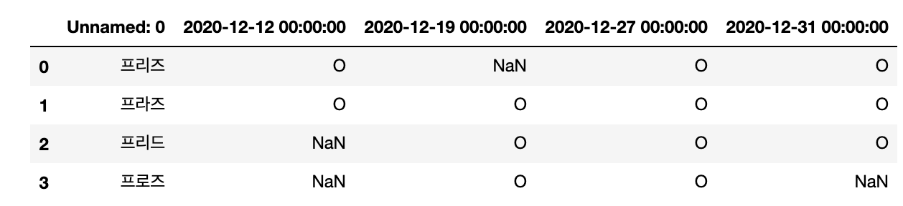

본 포스트는 MacOS 10.15.6 을 기준으로 작성하였습니다.
간혹 개발을 하면서 필자는 엑셀파일을 직접 불러들여서 그 안에 데이터를 분석 및 출력하는 작업을 맡고 있다. 직접 파이썬을 사용하며 엑셀파일까지 불러들이는 것은 가능하지만, 실제로 데이터화시키는 것에 큰 곤란함이 있었다. 특히 데이터 관련은 Pandas의 Dataframe이 쉽게 접하기 때문에, 일일이 데이터를 불러들여 리스트화시킨 다음 다시 그걸 Dataframe화 시키고 행과 열을 맞추는 귀찮은 작업들을 연발하게 된다.
그것들을 무시하고 한방에 Dataframe화 시키는 방법이 있다. 그것이 Pandas의 기능 중 하나인 read_excel이라는 기능이다. 직접적으로 파일 위치만 입력하고 부가적으로 파라미터에 요구데이터를 입력하면 자동으로 엑셀의 데이터들이 Dataframe화 되는 것을 확인할 수 있다. 그래서 필자는 이거 찾고난 뒤로 엑셀파일을 읽는 기능은 전부 read_excel로 사용하고 있다.
그렇다면 사용방법과 간단한 기능들에 대해서 소개를 하고자 한다.
필요 라이브러리
pandas==1.1.0 # read_excel을 포함한 라이브러리
numpy==1.19.2 # 데이터의 수치화
사용 환경 툴
Jupyter notebook
Read_excel 파일 불러오기
Read_excel은 Pandas에서 쉽게 불러올 수 있으며 기본적인 내용은 공식 문서에 작성되어있다.
공식 문서 pandas.read_excel
예시 엑셀 파일 
간단한 행과 열로 데이터프레임화가 가능하도록 출석확인용 데이터로 작성해보았다. 이 파일과 동시에 Jupyter Notebook으로 작성해 값을 부르도록 해보았다.
1
2
3
4
5
6
7
8
# import list
import os
import numpy as np
import pandas as pd
from IPython import display
pd.options.display.max_rows = 999 # 데이터 프레임 표시 최대 열수를 999로 지정
pd.set_option('display.max_columns',999) # 데이터 프레임 표시 최대 행수를 999로 지정
파일을 불러올 파일의 os와 numpy, pandas를 임포트 시키고 밑의 두 옶션을 데이터 프레임에 생략되는 열과 행을 전부 보여주는 코드이다. 알아두면 제법 유용하게 쓰인다.
1
2
3
4
# get excel data to dataframe
file_name = 'excel_file.xlsx'
df = pd.read_excel(file_name)
display(df)
Output : 
이렇게 쉽게 데이터프레임화 시킬 수 있다는 것이다. 필자는 이런 간편한 데이터프레임화에 반하여 잘 사용하고 있다. 더불어 read_excel에는 다른 파라미터도 존재해 원하는 헤더를 행이름으로 지정 가능하며 어디까지 불러올 수 있는가도 표현이 가능하다.
Read_excel 응용
이번 응용에서 사용해볼 것은 read_excel안에서의 파라미터를 직접 사용해 데이터프레임을 편하게 사용해보도록 하겠다. 이번 응용부터는 아래의 엑셀 파일을 이용하여 사용해보도록 하겠다.
예시 엑셀 파일
header
header는 해당 열 위치를 조정해 해당 행의 이름을 header의 데이터로 지정할 수 있다. 다만 header위의 데이터들은 전부 제외되기 때문에 주의하기 바란다.
1
2
3
4
# get excel data to dataframe from 7 rows to header
file_name = 'excel_file.xlsx'
df = pd.read_excel(file_name, header=7)
display(df)
Output : 
index_col
Index_col은 행의 몇번째 행을 데이터프레임의 인덱스의 수치로 사용할 수 있다. 위의 데이터프레임은 인덱스가 지정되어 있지 않기 때문에 0,1,2,3 으로 지정이 되어 있지만, index_col을 사용하게 된다면 해당 행의 데이터가 인덱스수치가 될 수 있다.
위의 예시 엑셀 파일을 그대로 이어 이번 데이터프레임에서 인덱스를 사원명으로 지정해보도록 하겠다.
1
2
3
4
# get excel data to dataframe and set index from A column
file_name = 'excel_file.xlsx'
df = pd.read_excel(file_name, header=7, index_col=0)
display(df)
Output :
이걸로 각 데이터프레임의 인덱스가 사원명으로 지정되었다. 앞으로 데이터프레임에서 임의 사원의 데이터를 확인할 수 있으며, 인덱스를 활용한 데이터를 사용할 수 있다.
Usecols
Usecols은 엑셀파일의 특정 행만을 데이터로 출력하고 싶을때 사용하는 파라미터이다. 예를 들어 위의 예시의 A행의 이름과 12월 27, 31일 분만 출력을 원한다면 해당 행의 알파벳을 입력해주기만 하면 된다.
역시 위의 예시 엑셀 파일을 그대로 이어 27일, 31일만 출력하도록 하겠다.
1
2
3
4
# get excel data to dataframe from A, D, E columns
file_name = 'excel_file.xlsx'
df = pd.read_excel(file_name, header=7, index_col=0, usecols='A,D:E')
display(df)
Output :
keep_default_na
Keep_default_na는 엑셀 셀이 공백일 경우 자동으로 NaN으로 지정할 것인가 아닌가를 세팅할 수 있다. 기존 Default는 True로 되어있어서 지금까지의 공백의 출력값이 전부 NaN으로 되어있었다. 하지만 이런 NaN을 원치 않을 시에는 False로 지정하여 공백의 출력값을 문자열 공백으로 출력할 수 있다.
위의 예시 엑셀 파일로 Nan의 데이터를 전부 공백 문자열로 바꾸어 보겠다.
1
2
3
4
# get excel data to dataframe
file_name = 'excel_file.xlsx'
df = pd.read_excel(file_name, header=7, index_col=0, keep_default_na=False)
display(df)
Output :